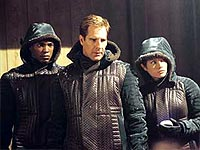
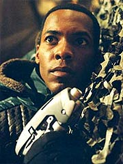
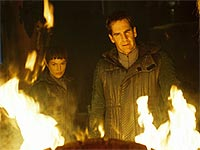
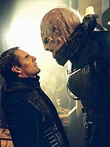
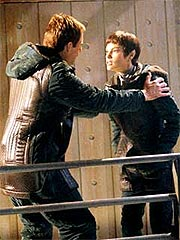

|
MANCHETE
DO EPISDIO
Segmento
ilumina segredo do passado
de T'Pol e aprimora relao com Archer
Episdio
anterior | Prximo
episdio
Sinopse:
T'Pol recebe uma comunicao no meio da noite do Alto Comando Vulcano, informando-a de que Menos foi localizado a poucos dias da localizao atual da Enterprise. A primeiro-oficial diz a Archer pela manh que ele receber uma chamada do almirante Forrest, ordenando a Enterprise para as referidas coordenadas. L, ele deve permitir que T'Pol saia com um piloto em um shuttlepod e conduza uma misso para o governo Vulcano, esperarando pelo retorno dos dois. Uma nave Vulcana tambm deve chegar em breve ao setor.
Archer pede a T'Pol mais informaes, mas ela se recusa. Mais tarde, o capito recebe a prometida ligao de Forrest e designa Mayweather para acompanhar a Vulcana na misso secreta. Pouco antes da partida, o capito surpreendido por T'Pol, que pede que ele a acompanhe. Quando perguntada sobre o porqu da deciso, ela diz apenas que precisa ter algum em quem possa confiar junto dela.
O capito deixa Trip no comando da Enterprise, mas se recusa a revelar ao engenheiro a natureza da misso que ele vai conduzir com T'Pol e Mayweather. J no shuttlepod, a Vulcana revela aos dois humanos os detalhes da ao. Ela est l para capturar Menos, um fugitivo Vulcano. H 30 anos, ele e outros 108 agentes Vulcanos foram alterados cirurgicamente para ajudar o governo de um planeta aliengena a deter instituies criminosas. Menos foi um dos muitos que se infiltraram em gangues de traficantes, mas acabou se tornando um dos poucos a se recusar a retornar a Vulcano aps o fim da operao.
 Na poca, T'Pol trabalhava com o departamento de segurana Vulcano e foi uma das agentes designadas para capturar os fugitivos. A ela foram atribudas seis capturas -- Menos seria a sexta, mas tem conseguido fugir dela por anos. Ela quase o capturou certa vez em Risa, mas fracassou. Archer no entende por que o Alto Comando Vulcano no escolheu outro para a misso, mas T'Pol justifica dizendo que eles consideram ser uma questo de honra para ela.
Devidamente informados, Archer e Mayweather acompanham T'Pol at um planeta naquele sistema, onde se encaminham para um bar ocupado por diversas espcies aliengenas. L eles detectam a presena de Menos e, aps um tiroteio, conseguem apreend-lo. O trio pretende partir o mais rpido possvel, mas so informados de que no podem faz-lo, pois a plataforma em que o shuttlepod est estacionado est em manuteno, coberta por cido. A partida s ser possvel em quatro horas.
Diante disso, o grupo mantm Menos preso a uma mesa, no bar. O prisioneiro comea a conversar com eles e diz ser inocente das acusaes que o governo Vulcano faz: ele no um traficante, diz, mas apenas algum que no quis voltar para seu planeta-natal aps o trmino da misso. Ele tinha uma famlia e no queria abandon-la. T'Pol insiste em dizer que ele est dizendo mentiras, mas Menos habilmente consegue provoc-la. Ela intempestivamente sai correndo e, correndo o risco de se ferir, atravessa a plataforma cheia de cido para ir nave de Menos. L ela no encontra nenhuma das biotoxinas que Menos acusado de traficar, apenas os invlucros de injetores de dobra usados que o "ex-Vulcano" alega comercializar.
Desconsertada, ela volta ao bar e pede a Archer para falar a ss com o prisioneiro. Archer autoriza, e Menos comea a falar com T'Pol, o que faz com que ela recuperasse uma memria perdida: em Risa, ela no estava perseguindo somente Menos, mas tambm um outro fugitivo, chamado Jossen. Ela no tinha seis para capturar, mas sete. Naquela ocasio, ela acabou matando Jossen, mas a culpa por ter matado o que talvez fosse um inocente acabou fazendo com que ela fosse at o santurio de P'Jem, onde teve a sua memria do evento apagada. Somente ao confrontar Menos ela recuperou a conscincia do ocorrido.
 Na Enterprise, Tucker precisa lidar com as responsabilidades de ser o capito. O engenheiro at obrigado a fingir ser Archer para o capito da nave Vulcana que acaba de chegar, a fim de no revelar que T'Pol o havia levado na misso secreta, mas tudo acaba transcorrendo bem.
Enquanto isso, no planeta, T'Pol est profundamente abalada e no sabe mais se est correta em prender Menos. Ela deixa o fugitivo a ss, e Archer manda que Mayweather fique com ele, enquanto o capito conversa com a Vulcana para saber o que est havendo. O fugitivo aproveita a distrao e provoca um incndio no bar, causando a debandada de todos os aliengenas. T'Pol tenta resgatar Menos do fogo, mas ele acaba fugindo.
Ela guia Archer e Mayweather at a nave de Menos, mas ele no est l. Aparentemente, ele pode ter fugido na nave de qualquer um dos aliengenas que acabam de partir. T'Pol est disposta a abandonar a busca, mas Archer no est to convencido. O capito se junta a Mayweather no cockpit da nave e descobrem um estranho dispositivo. Ao mexer nele, acabam sem querer desativando um sistema interno de camuflagem, revelando que Menos ainda estava a bordo.
O fugitivo est armado e ameaa ferir T'Pol caso os dois humanos no entrem em um compartimento lacrado da nave. Os dois largam as pistolas e colaboram. Menos ento ordena que T'Pol v at a tranca e trave a porta do compartimento. Mas todos so surpreendidos quando Archer e Mayweather do um tranco na porta e voltam rea de carga, rapidamente recuperando suas pistolas de fase e voltando a disparar contra Menos. O fugitivo acaba se rendendo, por razes que logo ficam claras: atrs dele h um compartimento que guarda biotoxinas -- se um tiro os tivesse atingido, poderia ter matado a todos.
Mesmo rendido, Menos rpido o suficiente para abrir uma escotilha e fugir. T'Pol vai logo atrs dele, e, apesar de confusa, convencida a disparar e imobilizar o fugitivo, pondo fim caada de anos.
Comentrios:
"The Seventh" consegue quebrar a monotonia usual com uma histria interessante e imprevisvel, boas atuaes e revelaes surpreendentes a respeito do passado de T'Pol, uma personagem que certamente merece a ateno dos produtores.
Alm disso, o episdio captura como nunca a dinmica ideal que deveria existir entre a Vulcana e o capito Archer. E o mais impressionante que o segmento foi escrito pelos mesmos autores de
"A Night in Sickbay", o episdio que at agora mais fez para destruir a relao de amizade e confiana que estava se formando em torno dos dois.
 Aparentemente, a dupla Rick Berman e Brannon Braga sofre de algum distrbio de dupla personalidade enquanto escreve para a srie, conseguindo ir dos melhores episdios aos mais catastrficos conceitos. Uma pena que no s a qualidade geral dos segmentos, mas a prpria integridade dos personagens seja colocada nessa montanha-russa criativa dos dois.
A boa notcia que em "The Seventh" eles captaram exatamente o esprito da coisa. A palavra-chave da dupla Archer e T'Pol no "tenso sexual", como queria sugerir
"A Night in Sickbay", mas sim "confiana", como o presente episdio faz questo de enfatizar, de forma textual, em vrias partes do roteiro, incluindo a soluo para o dilema de T'Pol.
Alis, a Vulcana a grande beneficiada do segmento. Embora ela cada vez mais se mostre como um exemplar atpico de sua espcie (e mais surpresas para a personagem ainda viro nesta temporada), inegvel o fato de que seu crescimento e sua evoluo ao longo da srie comeam a mostrar consistncia, tornando T'Pol, embora menos Vulcana, mais real.
O passado dela aqui reconstrudo em vrios detalhes, explicando seu envolvimento anterior com o Ministrio da Segurana Vulcano e suas atividades prvias como agente secreta (que ajudam a esclarecer, por exemplo, como a oficial sabia tanto sobre auto-defesa, como demonstrado em
"Marauders", e tambm explica por que ela seria uma boa escolha para se tornar a representante Vulcana a bordo da Enterprise).
 Mais da "diplomacia" Vulcana do sculo 22 tambm exposta, mostrando como esses aliengenas no hesitavam muito em interferir em outros mundos, contanto que eles j tivessem tecnologia de dobra (j havamos visto sugestes disso em
"Shadows of P'Jem", o que mostra tambm uma certa consistncia poltica desses Vulcanos pr-Federao).
Mas nada aqui mostrado de forma mais intrigante que a crise emocional da at ento estica T'Pol. No tanto porque faa um grande sentido (mesmo que a Vulcana no seja o esteretipo de sua espcie, no se esperaria que a morte de um suspeito em legtima defesa, durante uma fuga, fosse abalar profundamente uma agente secreta do Ministrio da Segurana), mas principalmente por dar a chance de Jolene Blalock provar seu valor como atriz.
Depois de "The Seventh", poucos continuaro pensando que a nica utilidade de Blalock na srie servir de fonte de sex appeal para garantir o interesse da audincia masculina. Sua interpretao aqui bastante slida e vende muito bem a idia de que T'Pol de fato est passando por uma srie crise emocional e, por consequncia, de valores.
Aps ter matado Jossen, que poderia ser inocente, T'Pol v tudo acontecer de novo diante dos seus olhos. Ela no quer condenar mais um potencial inocente, Menos, da mesma forma que fez com seu ex-colega. E suas experincias anteriores a bordo da Enterprise (especialmente a descoberta de que os Vulcanos podem sim mentir e agir sem tica, instalando postos avanados camuflados por santurios religiosos para vigiar seus inimigos) podem ter reforado a idia de que tudo no passasse de mais um embuste do Alto Comando para recuperar seus ex-agentes.
Mostrando rapidez de raciocnio para atacar os pontos fracos da Vulcana, Menos (interpretado com brilhantismo pelo grande Bruce Davison) logo descobre que pode manipul-la com o impacto emocional do assassinato de Jossen. Depois de tentar brevemente convencer Archer e Mayweather de que ele est sendo injustamente perseguido, ele logo percebe que T'Pol na verdade o alvo mais sensvel a sua manipulao intelectual.
Davison transmite muito bem o carter dbio de Menos (por um momento, at a audincia chega a se questionar se o personagem culpado ou inocente), mas talvez falte um pouco de resqucio Vulcano em sua interpretao. difcil acreditar que Menos algum dia tenha tido orelhas pontudas e trabalhado para o governo Vulcano. Apesar disso, trata-se de outra atuao slida, consistente e, acima de tudo, convincente.
 Cabe a Archer mostrar a T'Pol que ela est sendo manipulada pelo fugitivo. O capito de fato no consegue convenc-la completamente, o que torna a concluso ainda mais dramtica. A Vulcana segue em dvida at o fim, e sua resoluo definitiva, de atirar e capturar Menos, parte do capito, depois que T'Pol confirma que ele estava l porque ela precisa de algum em quem pudesse confiar. "Ento confie em mim. Voc est aqui para apreender, no para julgar." E T'Pol atira. Claramente, ela no sabia que deciso tomar. Ela simplesmente confiou no julgamento de Archer. Uau. Isso o que esperamos de um relacionamento bem escrito entre os dois.
Apesar de ser um episdio sobre T'Pol e seu passado sombrio (que incluiu at uma interessante e atraente referncia ao santurio de P'Jem), no falta espao para ao e aventura. A sequncia da captura de Menos no exatamente primorosa, do ponto de vista da direo, mas permanece atraente pelo cenrio extremamente interessante e diferenciado do bar repleto de aliengenas.
O que mais chama ateno, entretanto, do ponto de vista da ao, a concluso, com o tiroteio na nave de Menos e a rendio do criminoso. A sequncia em que Archer e Mayweather so colocados no compartimento fechado e saem subitamente dando um tranco na porta, recuperando suas armas e iniciando o combate bastante reminiscente dos bons e velhos tempos da
Srie Clssica. No 100% convincente (como as brigas de punho da srie original tambm nunca foram), mas o tipo de suspenso da descrena que d gosto de nutrir. O fator empolgao fala mais alto.
O nico problema da sequncia a segunda fuga de Menos, aps a suposta rendio em sua nave. Bastaria um tiro em tonteio para pr o prisioneiro a nocaute, mas o trio da Enterprise acaba deixando ele escapar, de forma no muito convincente. Entretanto, depois que se v o payoff da situao no dilogo entre Archer e T'Pol, entende-se que valeu a pena o vacilo do capito e seus comandados -- pelo menos do ponto de vista dramtico.
Se por um lado o episdio um prato cheio para T'Pol e Archer, por outro, os demais personagens passam quase que esquecidos. Mayweather faz parte do grupo de descida, mas sua participao a de um figurante de luxo. E o enredo secundrio do episdio, com Trip no comando da Enterprise, s serve a algumas piadas de gosto duvidoso (embora a cena em que o engenheiro se passa pelo capito Archer para falar com o capito Vulcano tenha l o seu charme).
Do ponto de vista tcnico, marca o belo trabalho de maquiagem feito para os aliengenas do bar, assim como as tomadas em CGI, especialmente das imediaes da locao aliengena. A direo bastante eficiente, especialmente em retratar o drama de T'Pol e no tiroteio final, mas fracassa em transmitir ao suficiente na primeira captura de Menos.
Um destaque final vai tambm para as cenas de flashback da caada de T'Pol aos agentes fugitivos na selva de Risa e no santurio de P'Jem -- o tom amarelado da sequncia e a lente que permite visualizar com clareza apenas a parte central da tela ajudam a reforar a idia de que se tratam de memrias dolorosas e, acima de tudo, vitimadas por grave manipulao. Um toque de mestre.
H muito pouco aqui que possa ser comparado a segmentos anteriores de
Jornada. E sempre bom ver uma histria realmente original. E se uma boa histria ento, melhor ainda. Por isso,
"The Seventh" acaba marcando sua posio como um dos episdios fortes dessa segunda temporada.
Citaes:
Archer - "Move over, Porthos, let the lady sit down. Sounds like this is gonna be good."
("Sai da, Porthos, deixe a moa sentar. Parece que isso vai ser bom.")
T'Pol - "I need to be with someone I can trust."
("Preciso estar com algum em quem confie.")
Archer - "We don't do quickly and quietly well but we are good at arithmetic."
("Ns no fazemos bem em silncio e rapidamente, mas somos bons de aritmtica.")
Archer - "When you don't have the ability to repress emotions, you learn to deal with them and move on."
("Quando voc no tem a habilidade de reprimir emoes, voc aprende a lidar com elas e seguir em frente.")
T'Pol - "If you ever need someone you can trust..."
("Se um dia precisar de algum em quem possa confiar...")
Trivia:
 As filmagens comearam no dia 3 de setembro e terminaram no dia 11. Na ocasio, Scott Bakula conduziu a equipe e o elenco em um minuto de silncio para lembrar os que morreram nos ataques terroristas um ano atrs.
As filmagens comearam no dia 3 de setembro e terminaram no dia 11. Na ocasio, Scott Bakula conduziu a equipe e o elenco em um minuto de silncio para lembrar os que morreram nos ataques terroristas um ano atrs.
Bakula comentou sobre o episdio durante as filmagens: "Estamos filmando um episdio hoje que acabamos de comear, e Bruce Davison vai ser a estrela convidada, e descobrimos que T'Pol teve uma carreira prvia antes do Diretrio de Cincia."
Bruce Davison um ator bastante prestigiado no cinema e na televiso. Seu papel mais conhecido dos fs de fico provavelmente o senador Kelly, do filme "X-Men". Davison j havia interpretado Jareth, em
"Remember", de Voyager.
Em uma entrevista, Davison revelou como se envolveu com
Jornada nas Estrelas. "Eu topei com Rick Berman em uma loja de eletrnicos. Eu acho que disse a ele que adoraria fazer uns, e isso faz um tempo. Fiz um para
Voyager, trabalhei com Patrick [Stewart] e tenho sido amigo de vrias pessoas que estiveram na srie, LeVar [Burton], por exemplo."
Davison elogiou muito o trabalho de Jolene Blalock neste segmento. "Esse um dos melhores trabalhos de Jolene, eu acho. Ela tinha um papel duro para colocar naquele personagem, e ela faz muito bem, no iambo pentmetro de seu personagem que pode revelar to pouca emoo. um trabalho duro."
O ator comentou como foi trabalhar com o trio fixo de
Enterprise. "[Trabalhei com] Jolene e Scott principalmente, e Anthony [Montgomery] -- no chame-o de Tony! Eles foram maravilhosos. Eu fiz todo tipo de atuao e essa uma das mais difceis. Realmente , fazer esse material crvel, semana sim, semana no. Especialmente quando voc tem roteiros onde eles escrevem '[tech]' e ento dizem, 'O dicoblobliador antediluviano de metano est derretido!' E voc precisa fazer com que soe convincente, bem rpido."
Ficha
tcnica:
Escrito por Rick
Berman & Brannon Braga
Direo de David Livingston
Exibido em 06/11/2002
Produo:
033
Elenco:
Scott
Bakula como Jonathan Archer
Jolene Blalock como
T'Pol
John Billingsley
como Phlox
Anthony Montgomery
como Travis Mayweather
Connor Trinneer como
Charlie 'Trip' Tucker III
Dominic Keating como
Malcolm Reed
Linda Park como Hoshi Sato
Elenco convidado:
Bruce Davison como Menos
Richard Wharton como Jossen
David Richards como mestre da doca
Vincent Hammond como aliengena grande
Coleen Maloney como oficial Vulcano
Stephen Mendillo como capito Vulcano
Episdio
anterior | Prximo
episdio
|